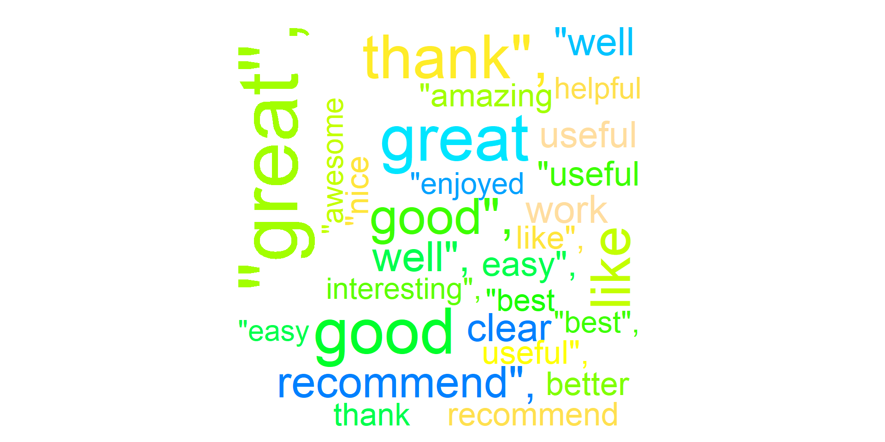

# A tibble: 26,882 × 5
CourseId Review Label cld2 review_id
<chr> <chr> <dbl> <chr> <dbl>
1 nurture-market-strategies It would be better if the … 1 en 1
2 nand2tetris2 Superb course. Great prese… 5 en 2
3 schedule-projects Excellent course! 5 en 3
4 teaching-english-capstone-2 I'd recommend this course … 5 en 4
5 machine-learning This course was so effecti… 5 en 5
6 python-network-data Words cannot describe how … 5 en 6
7 clinical-trials Great course! 5 en 7
8 python-genomics I didn't know anything abo… 3 en 8
9 strategic-management Loved everything about thi… 5 en 9
10 script-writing No significant instruction… 1 en 10
# ℹ 26,872 more rowsSentiment
Analysis
Day 15
Prof Emily Kurtz
Carleton College
Stat 220 - Spring 2026
Today
- Sentiment analysis
- Text analysis loose ends
Data for today
Random (?) sample of 26,882 reviews of coursera courses
Are these positive or negative reviews?
“thank you so much it was great course”
“Too reliant on materials directly collected by professor, too little context of larger artistic community.”
“Excellent! easy to follow and engaging!”
“Slow and redundant. Would have preferred a faster-paced and more substantive course.”
“Way too shallow and way too english :(”
Sentiment analysis
One way to analyze the sentiment is to consider the text as a combination of the individual words. It’s computationally convenient because we’re able to use the tidy tools that we’ve been building up:
- tokenize the text
- join the sentiment values to each token
- group the words in the document to summarize the overall sentiment
Sentiment datasets: bing
# A tibble: 20 × 2
word sentiment
<chr> <chr>
1 undercutting negative
2 unexpectedly negative
3 slack negative
4 fabrication negative
5 majesty positive
6 perilously negative
7 cave negative
8 partisan negative
9 prik negative
10 miserableness negative
11 flourish positive
12 acridness negative
13 darling positive
14 undisputed positive
15 crabby negative
16 inexperience negative
17 boastful negative
18 unequivocally positive
19 greatness positive
20 gratify positive Sentiment datasets: afinn
# A tibble: 20 × 2
word value
<chr> <dbl>
1 postponed -1
2 beautifully 3
3 chagrin -2
4 appreciation 2
5 spark 1
6 mope -1
7 empathetic 2
8 oversimplified -2
9 stimulating 2
10 exaggerates -2
11 disconsolation -2
12 sophisticated 2
13 fearing -2
14 bereaving -2
15 dejected -2
16 stopped -1
17 strikers -2
18 scary -2
19 worse -3
20 protesters -2# A tibble: 26,882 × 5
CourseId Review Label cld2 review_id
<chr> <chr> <dbl> <chr> <dbl>
1 nurture-market-strategies It would be better if the … 1 en 1
2 nand2tetris2 Superb course. Great prese… 5 en 2
3 schedule-projects Excellent course! 5 en 3
4 teaching-english-capstone-2 I'd recommend this course … 5 en 4
5 machine-learning This course was so effecti… 5 en 5
6 python-network-data Words cannot describe how … 5 en 6
7 clinical-trials Great course! 5 en 7
8 python-genomics I didn't know anything abo… 3 en 8
9 strategic-management Loved everything about thi… 5 en 9
10 script-writing No significant instruction… 1 en 10
# ℹ 26,872 more rowsinner_join

joining the sentiment data
# A tibble: 69,063 × 4
Label review_id word sentiment
<dbl> <dbl> <chr> <chr>
1 1 1 better positive
2 5 2 superb positive
3 5 2 great positive
4 5 2 challenging negative
5 5 2 fun positive
6 5 2 recommend positive
7 5 3 excellent positive
8 5 4 recommend positive
9 5 4 enjoyed positive
10 5 4 great positive
# ℹ 69,053 more rowsgroup_by review ID, summarize overall sentiment
# A tibble: 25,384 × 2
review_id sum
<dbl> <int>
1 1 1
2 2 3
3 3 1
4 4 3
5 5 5
6 6 1
7 7 1
8 8 2
9 9 5
10 10 0
# ℹ 25,374 more rowsMost positive review (by sum):
[1] "This course is awesome on so many levels. This is the best inferential statistics course I've come across. Here's why:*** The slides are beautiful and visually appealing, making following the rigorous content easier to digest.*** Instructors are captivating and articulate, the explanations are clear and concise.*** The assignments are very very tough, making the course incredibly challenging, but worth it. Honestly, I don't get why people give 1 star because the course is tough. This should be a huge plus.It was a real challenge getting 100% for everything. For every quiz, I attempted 2 - 3 times to get 100%. The challenge is worth it. I couldn't thank you enough for this course. You explain tough statistical concepts like the difference between prediction intervals and confidence intervals really well. Also, I think this course has the best teaching for Analysis of Variance (I have taken a few other statistics moocs). Also, your course helped me appreciate the meaning of R-squared, standard errors, confidence intervals in a very intuitive fashion. There are many other new things I've learnt from your course, some of them I thought I knew, but you helped me to either \"Aha\" or understand them more deeply.Before this course, most of the time statistics to me is like plug-and-play using procedures and and softwares. But now, I can understand the concepts and what the calculations really mean.Thank you for creating quizzes that make us really do step-by-step calculations and not just plug data into equations to get results like so many other statistics moocs do.The pedagogy is really great. Sometimes quizzes can be frustrating because I need to read very carefully into the meaning of the questions and all the options. However, the learning experience is really worth it.Again, thank you for an amazing course! This is rare stuff!It is without a doubt, a lot of passion and effort has been put into this course and this series."Most negative reviews (by sum):
[1] "Complex concepts (e.g., regression), which cannot be taught in such a short course format (I know from extensive prior training), are taught here in an arcane way. I don't know how students without prior knowledge on these topics (e.g., regression, ROC curve analysis) could possibly understand this when taught this way.Course is also in an 'early draft' mode, with plenty of mistakes in the videos/slides. The course (and specialization) really tarnishes - instead of enhancing - this institution's outside image and reputation.Really a deception; sorry I took this class and specialization, a complete waste of my time and money. The initial presentation was misleading (and I have found online many people sharing the same feeling)."What weaknesses do you notice about this analysis?
What could we change?
Loose Ends - Word Clouds
Word Clouds
- Basically, a sort of artistic histogram for words
- Made using the
wordcloudR package (not inTidyverse)

With the rest of class time
Text analysis activity with Sherlock Holmes data